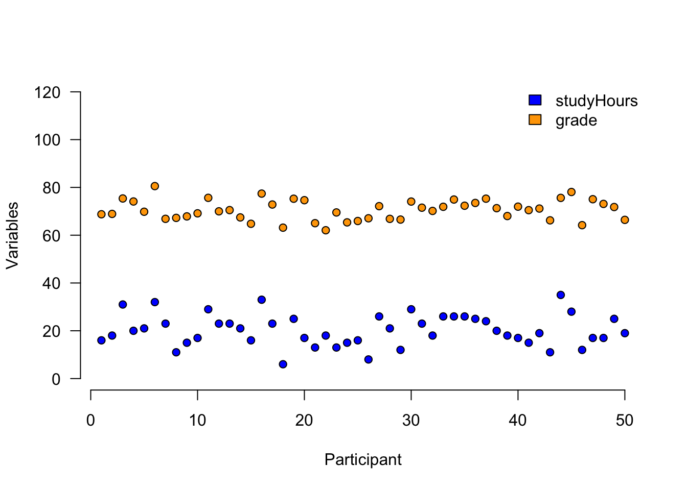
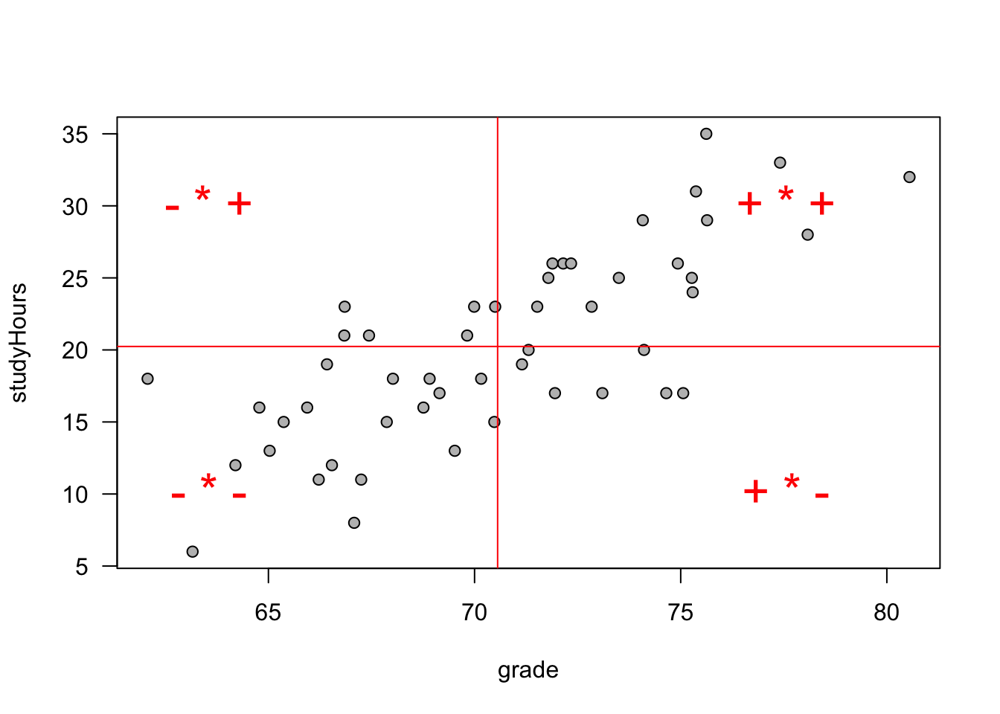
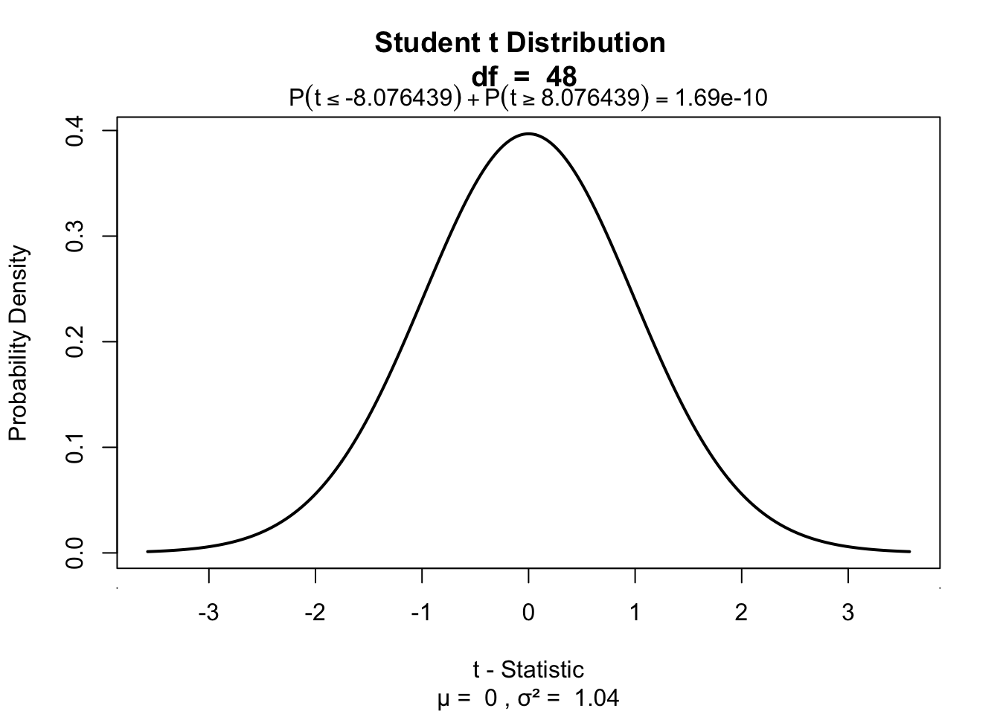
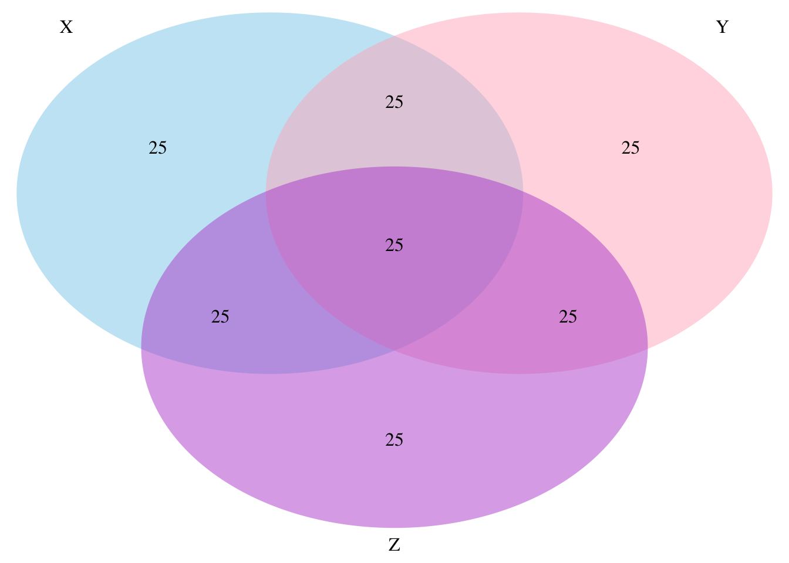
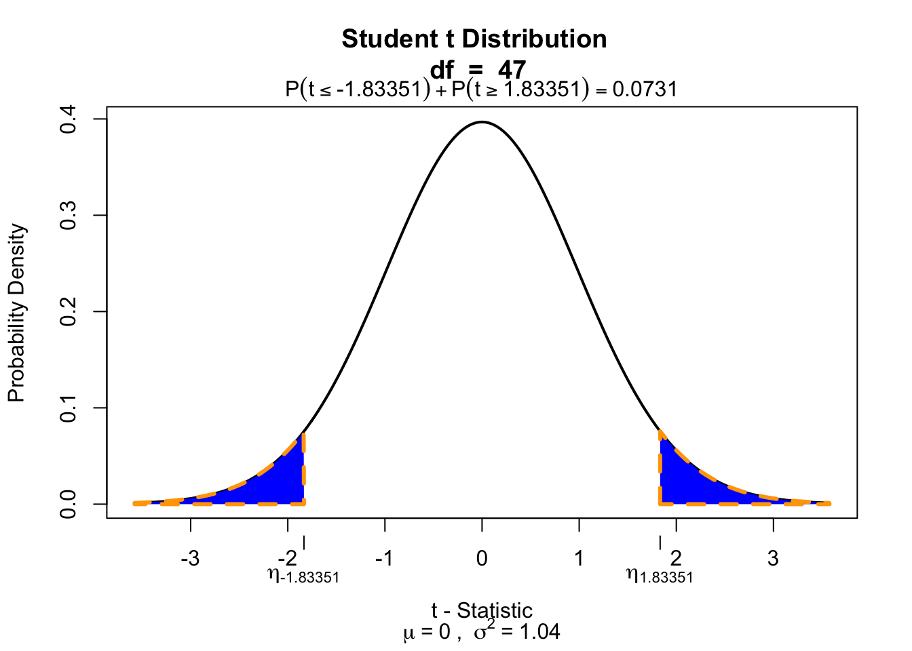

Correlation
Pearson Correlation

In statistics, the Pearson correlation coefficient, also referred to as the Pearson’s r, Pearson product-moment correlation coefficient (PPMCC) or bivariate correlation, is a measure of the linear correlation between two variables X and Y. It has a value between +1 and −1, where 1 is total positive linear correlation, 0 is no linear correlation, and −1 is total negative linear correlation. It is widely used in the sciences. It was developed by Karl Pearson from a related idea introduced by Francis Galton in the 1880s.
Source: Wikipedia
PMCC
\[r_{xy} = \frac{{COV}_{xy}}{S_xS_y}\] Where \(S\) is sthe standard deviation and \(COV\) is the covariance.
\[{COV}_{xy} = \frac{\sum_{i=1}^N (x_i - \bar{x})(y_i - \bar{y})}{N-1}\]
Plot correlation
Plot correlation

Plot correlation
\[(x_i - \bar{x})(y_i - \bar{y})\]
Guess the correlation

Simulate data
set.seed(123)
n <- 50
studyHours <- round(abs(rnorm(n, 20, 7)))
b.0 <- 60
b.1 <- .5
error <- rnorm(n, 0, 3)
grade <- b.0 + b.1 * studyHours + error
error <- rnorm(n, 0, 0.3)
motivation <- 3.2 + .2 * grade + errorExplaining variance

Standardize
\[z = \frac{x_i - \bar{x}}{{sd}_x}\]
z.grade <- (data$grade - mean(data$grade)) / sd(data$grade)
z.studyHours <- (data$studyHours - mean(data$studyHours)) / sd(data$studyHours)Covariance
\[{COV}_{xy} = \frac{\sum_{i=1}^N (x_i - \bar{x})(y_i - \bar{y})}{N-1}\]
mean.grade <- mean(grade, na.rm=TRUE)
mean.studyHours <- mean(studyHours, na.rm=TRUE)
delta.grade <- grade - mean.grade
delta.studyHours <- studyHours - mean.studyHours
prod <- (grade - mean.grade) * (studyHours - mean.studyHours)
covariance <- sum(prod) / (N - 1)
covariance[1] 20.62015Covariance
Correlation
\[r_{xy} = \frac{{COV}_{xy}}{S_xS_y}\]
correlation <- covariance / ( sd(grade) * sd(studyHours) ); correlation[1] 0.7589993correlation[1] 0.7589993Correlation
\[r_{xy} = \frac{{COV}_{xy}}{S_xS_y}\] \[{COV}_{xy} = \frac{\sum_{i=1}^N (x_i - \bar{x})(y_i - \bar{y})}{N-1}\]
cor( grade, studyHours) # correlation[1] 0.7589993cor(z.grade, z.studyHours) # correlation of z-scores[1] 0.7589993# covariance of z-scores
sum(z.grade * z.studyHours ) / (N - 1)[1] 0.7589993Plot correlation

Significance of a correlation
\[t_r = \frac{r \sqrt{N-2}}{\sqrt{1 - r^2}} \\ {df} = N - 2\]
\[ \begin{aligned} H_0 &: t_r = 0 \\ H_A &: t_r \neq 0 \\ H_A &: t_r > 0 \\ H_A &: t_r < 0 \\ \end{aligned} \]
r to t
df = N-2
t.r = ( correlation*sqrt(df) ) / sqrt(1-correlation^2)
cbind(t.r, df) t.r df
[1,] 8.076439 48Visualize
One-sample t-test
if(!"visualize" %in% installed.packages()) { install.packages("visualize") }
library("visualize")
visualize.t(c(-t.r, t.r),df,section='tails')
Partial correlation
Venn diagram

Partial correlation
\[\LARGE{r_{xy \cdot z} = \frac{r_{xy} - r_{xz} r_{yz}}{\sqrt{(1 - r_{xz}^2)(1 - r_{yz}^2)}}}\]
motivation = data$motivation
cor.grade.studyHours = cor(grade,studyHours)
cor.grade.motivation = cor(grade,motivation)
cor.studyHours.motivation = cor(studyHours,motivation)
data.frame(cor.grade.studyHours, cor.grade.motivation, cor.studyHours.motivation) cor.grade.studyHours cor.grade.motivation cor.studyHours.motivation
1 0.7589993 0.9395244 0.7450336numerator = cor.grade.studyHours - (cor.grade.motivation * cor.studyHours.motivation)
denominator = sqrt( (1-cor.grade.motivation^2)*(1-cor.studyHours.motivation^2) )
partial.correlation = numerator / denominator
partial.correlation[1] 0.2583645Significance of partial correlation
One-sample t-test
df = N - 3
t.pr = ( partial.correlation*sqrt(df) ) / sqrt(1-partial.correlation^2)
t.pr[1] 1.83351visualize.t(c(-t.pr,t.pr),df,section='tails')